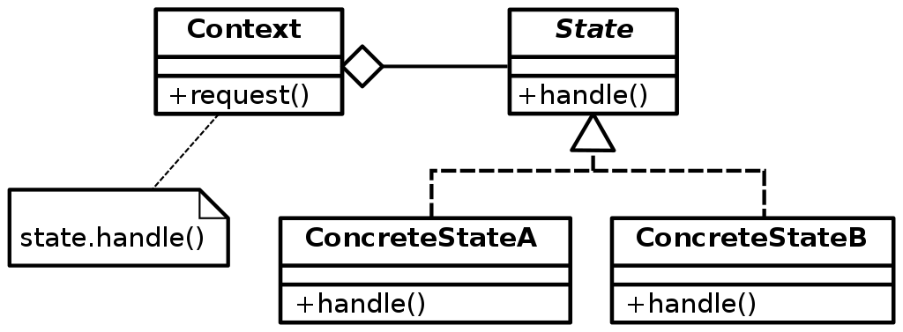

State - Introduccion
En determinadas ocasiones, cuando el contexto en el que se esta desarrollando requiere que un objeto tenga diferentes comportamientos segun el estado en que se encuentra, resulta complicado poder manejar el cambio de comportamientos y los estados de dicho objeto, todos dentro del mismo bloque de codigo. El patron State propone una solucion a esta complicacion, creando basicamente, un objeto por cada estado posible del objeto que lo llama.
Proposito
Permite a un objeto alterar su comportamiento dependiendo de su estado interno.
Motivacion
El patron State esta motivado por aquellos objetos en que, segun su estado actual, varia su comportamiento ante los diferentes mensajes. Como ejemplo se toma una clase TCPConnection que representa una conexion de red, un objeto de esta clase tendra diferentes respuestas segun su estado (Listening, Closed o Established). Por ejemplo la invocacion al metodo Open de un objeto de la clase TCPConnection diferira su comportamiento si la conexion se encuentra en Closed o en Established.
Problema
Existe una extrema complejidad en el codigo cuando se intenta administrar comportamientos diferentes segun una cantidad de estados diferentes. Asimismo el mantenimiento de este codigo se torna dificultoso, e incluso se puede llegar en algunos casos puntuales a la incongruencia de estados actuales por la forma de implementacion de los diferentes estados en el codigo (por ejemplo con variables para cada estado).
Consideraciones
Se debe contemplar la complejidad comparada con otras soluciones.
Solucion
Se implementa una clase para cada estado diferente del objeto y el desarrollo de cada metodo segun un estado determinado. El objeto de la clase a la que le pertenecen dichos estados resuelve los distintos comportamientos segun su estado, con instancias de dichas clases de estado. Asi, siempre tiene presente en un objeto el estado actual y se comunica con este para resolver sus responsabilidades.
La idea principal en el patron State es introducir una clase abstracta TCPState que representa los estados de la conexion de red y una interfaz para todas las clases que representan los estados propiamente dichos. Por ejemplo la clase TCPEstablished y la TCPClose implementan responsabilidades particulares para los estados establecido y cerrado respectivamente del objeto TCPConnection. La clase TCPConnection mantiene una instancia de alguna subclase de TCPState con el atributo state representando el estado actual de la conexion. En la implementacion de los metodos de TCPConnection habra llamadas a estos objetos representados por el atributo state para la ejecucion de las responsabilidades, asi segun el estado en que se encuentre, enviara estas llamadas a un objeto u otro de las subclases de TCPState.
Estructura UML
Participantes
- Context(Contexto): Este integrante define la interfaz con el cliente. Mantiene una instancia de ConcreteState (Estado Concreto) que define su estado actual
- State (Estado):Define una interfaz para el encapsulamiento de la responsabilidades asociadas con un estado particular de Context.
- Subclase ConcreteState:Cada una de estas subclases implementa el comportamiento o responsabilidad de Context.
El Contexto (Context) delega el estado especifico al objeto ConcreteState actual Un objeto Context puede pasarse a si mismo como parametro hacia un objeto State. De esta manera la clase State puede acceder al contexto si fuese necesario. Context es la interfaz principal para el cliente. El cliente puede configurar un contexto con los objetos State. Una vez hecho esto, los clientes no tendran que tratar con los objetos State directamente. Tanto el objeto Context como los objetos de ConcreteState pueden decidir el cambio de estado.
Colaboraciones
El patron State puede utilizar el patron Singleton cuando requiera controlar que exista una sola instancia de cada estado. Lo puede utilizar cuando se comparten los objetos como Flyweight existiendo una sola instancia de cada estado y esta es compartida con mas de un objeto.
¿Como funciona?
La clase Context envia mensajes a los objetos ConcreteState dentro de su codigo para brindarle a estos la responsabilidad que debe cumplir el objeto Context. Asi el objeto Context va cambiando las responsabilidades segun el estado en que se encuentra, puesto que tambien cambia de objeto ConcreteState al hacer dicho cambio de estado.
¿Cuando emplearlo?
Esta apuntado a cuando un determinado objeto tiene diferentes estados y tambien distintas responsabilidades segun el estado en que se encuentre en determinado instante. Tambien puede utilizarse para simplificar casos en los que se tiene un complicado y extenso codigo de decision que depende del estado del objeto
Ventajas y desventajas
Se encuentran las siguientes ventajas:
- Se localizan facilmente las responsabilidades de los estados especificos, dado que se encuentran en las clases que corresponden a cada estado. Esto brinda una mayor claridad en el desarrollo y el mantenimiento posterior. Esta facilidad la brinda el hecho que los diferentes estados estan representados por un unico atributo (state) y no envueltos en diferentes variables y grandes condicionales.
- Hace los cambios de estado explicitos puesto que en otros tipos de implementacion los estados se cambian modificando valores en variables, mientras que aqui al estar representado cada estado.
- Los objetos State pueden ser compartidos si no contienen variables de instancia, esto se puede lograr si el estado que representan esta enteramente codificado en su tipo. Cuando se hace esto estos estados son Flyweights sin estado intrinseco.
- Facilita la ampliacion de estados
- Permite a un objeto cambiar de clase en tiempo de ejecucion dado que al cambiar sus responsabilidades por las de otro objeto de otra clase la herencia y responsabilidades del primero han cambiado por las del segundo.
Se encuentran la siguiente desventaja:
- Se incrementa el numero de subclases.
Implementacion (JAVA)
public class Test
{
public static void main( String arg[] )
{
try
{
State state = new ConcreteStateA();
Context context = new Context();
context.setState( state );
context.request();
}
catch( Exception e )
{
e.printStackTrace();
}
}
}
public class Context
{
private State state;
public void setState( State state )
{
this.state = state;
}
public State getState()
{
return state;
}
public void request()
{
state.handle();
}
}
public interface State
{
void handle();
}
public class ConcreteStateA implements State
{
public void handle()
{
}
}
public class ConcreteStateB implements State
{
public void handle()
{
}
}
/**
* State pattern:We have a specific class(Context) that manages the state changes of a external class by creating different instance depending
* on the state you want to adopt.
* Every class that you create implements an interface(State) that define the method name that they have to implement
* @author Pperez
*
*/
public class StatePattern {
public void main(String args[]){
try{
State state;
Context context = new Context();
SocketChannel socketChannel = null;
//-----------------------------\\
// OPEN/LISTENING SOCKET \\
//-----------------------------\\
//First State:
state = new ConnectSocketState(socketChannel);
context.setState( state );
socketChannel = context.request();
//-----------------------------\\
// CLOSE SOCKET \\
//-----------------------------\\
//Second State:
state = new CloseSocketState(socketChannel);
context.setState( state );
socketChannel = context.request();
}catch( Exception e ) {
e.printStackTrace();
}
}
public class Context
{
private State state;
public void setState( State state )
{
this.state = state;
}
public State getState()
{
return state;
}
public SocketChannel request()
{
return state.processState();
}
}
public interface State
{
SocketChannel processState();
}
public class ConnectSocketState implements State
{
SocketChannel socketChannel;
public ConnectSocketState(SocketChannel socketChannel){
this.socketChannel=socketChannel;
}
public SocketChannel processState()
{
try {
int port = 21;
InetAddress host = InetAddress.getByName("192.168.1.1");
SocketAddress adress = new InetSocketAddress(host, port);
socketChannel = SocketChannel.open(adress);
socketChannel.configureBlocking(true);
} catch (IOException e) {
e.printStackTrace();
}
return socketChannel;
}
}
public class CloseSocketState implements State
{
SocketChannel socketChannel;
public CloseSocketState(SocketChannel socketChannel){
this.socketChannel=socketChannel;
}
public SocketChannel processState(){
try {
socketChannel.close();
} catch (IOException e) {
e.printStackTrace();
}
return socketChannel;
}
}
}
Conclusiones
El patron no indica exactamente donde definir las transiciones de un estado a otro. Existen dos formas de solucionar esto: Una es definiendo estas transiciones dentro de la clase contexto, la otra es definiendo estas transiciones en las subclases de State. Es mas conveniente utilizar la primera solucion cuando el criterio a aplicar es fijo, es decir, no se modificara. En cambio la segunda resulta conveniente cuando este criterio es dinamico, el inconveniente aqui se presenta en la dependencia de codigo entre las subclases.
Tambien hay que evaluar en la implementacion cuando crear instancias de estado concreto distintas o utilizar la misma instancia compartida. Esto dependera si el cambio de estado es menos frecuente o mas frecuente respectivamente.